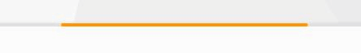

Today, I noticed the progress bar of gmail was so great and fully energetic. So I'd like to simulate this function by using CSS3. And first let's see the gmail progress bar in gif picture.

Ugly gif, waaaaaaaaaaa. Yes, every front end developer will have two solutions to achieve this function: using JavaScript or CSS3. And in this blog, I just want to show the CSS3 function, and I think it's easy. Now, go ahead!
First, we will use a "div" and "animation" in CSS3, set the id to be "progress".
#progress{
width:0px;
height:10px;
background:orange;
position:relative;
animation:myfirst 1s linear infinite;
-moz-animation:myfirst 1s linear infinite; /* Firefox */
-webkit-animation:myfirst 1s linear infinite; /* Safari and Chrome */
-o-animation:myfirst 1s linear infinite; /* Opera */
}
We should remind two things:
(1) When we want to change the position of an element by using "animation", we should use "position:relative", otherwise the animation won't work well.
(2) When using "animation", we have to care about the compatibility by adding "-moz", "-webkit" and "-o".
What's more, we will set the "keyframes" for "animation":
@keyframes myfirst{
0% {left:0px; width:0px;}
10% {left:0px; width:100px;}
20% {left:0px; width:200px;}
30% {left:50px; width:200px;}
40% {left:100px; width:200px;}
50% {left:150px; width:200px;}
60% {left:200px; width:200px;}
70% {left:250px; width:150px;}
80% {left:300px; width:100px;}
90% {left:350px; width:50px;}
100% {left:400px; width:0px;}
}
@-moz-keyframes myfirst /* Firefox */{
/* the same */
}
@-webkit-keyframes myfirst /* Safari 和 Chrome */{
/* the same */
}
@-o-keyframes myfirst /* Opera */{
/* the same */
}
Let's see the effect in webpage:
Great? Haha, it's easy, I just want to achieve this little function, and write a blog to recode it, because it's really a Google's function! I love it.
(That's all)